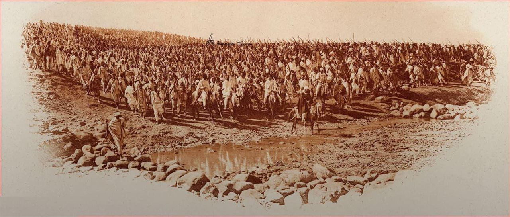
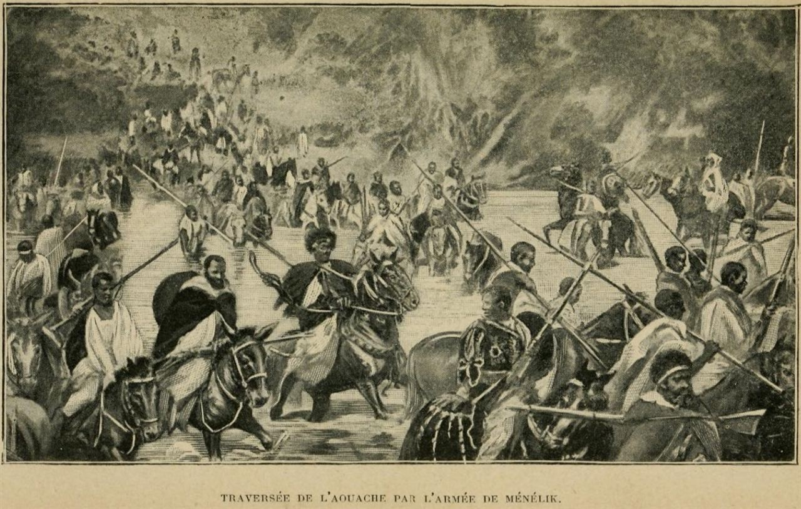
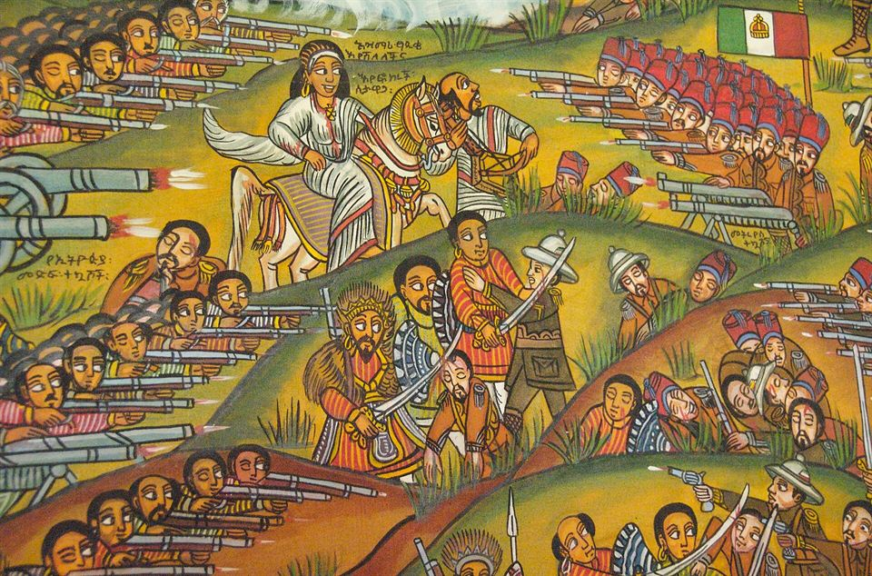

On 1 March 1896, in the highlands of northern Ethiopia, the army of Emperor Menelik II and Empress Taytu Betul destroyed an invading Italian force at the town of Adwa. It was the decisive defeat of a European colonial army by an African state — and it forced the world to recognise that Ethiopia would remain free.
As the Scramble for Africa carved the continent among European powers, one state did more than resist: it won. At Adwa, a European army was not merely turned back — it was destroyed, its general broken, its government thrown out. The battle has been called the most important African victory in the age of empire. This is how it happened, from the treaties to the battlefield.
In the 1880s the European powers divided Africa at the table, and Italy — a young nation hungry for an empire — claimed a foothold on the Red Sea coast. In 1890 it proclaimed the colony of Eritrea, directly on Ethiopia's doorstep. The stage was set for collision with the Ethiopian empire, the ancient Christian kingdom of the highlands, then led by Emperor Menelik II.
The collision first came through paper. In 1889 Italy and Menelik signed the Treaty of Wuchale. Its two versions did not say the same thing. The Italian text declared that Ethiopia must conduct its foreign affairs through Italy — making it a protectorate. The Amharic text said only that Ethiopia could use Italy's good offices if it wished. It was the difference between sovereignty and vassalage.
When Menelik learned of the discrepancy, he did not submit. In 1893 he repudiated the treaty and made clear that Ethiopia would deal with the world as an independent power. Italy chose to answer with war. Menelik, meanwhile, had spent years doing something far-sighted: buying modern rifles and artillery in vast quantities through the French port of Djibouti, and binding his nobility behind a single command.
In Rome, the ageing prime minister Francesco Crispi wanted a triumph to glorify his government. In the field, General Oreste Baratieri commanded Italy's force in Eritrea, backed by thousands of askari — Eritrean colonial troops fighting for Italy. Italy's confidence rested on recent memory: at Dogali in 1887, before the great war, an Ethiopian force under Ras Alula had wiped out an Italian column. Baratieri wanted revenge and a decisive result.
But Italy underestimated the enemy it faced. Ethiopia in 1896 was not a scattered collection of tribes; it was a centralised empire with a modernising ruler, an experienced officer class and — crucially — an arsenal of modern European-pattern rifles and mountain guns. Menelik had prepared for exactly this war.
As Italian forces pushed south from Eritrea into the Ethiopian highlands in 1895, Menelik did not wait to be picked apart. He called the whole nation to arms and marched north to meet them.

Menelik's greatest weapon was unity. He summoned the great lords of the empire — including his cousin Ras Makonnen, the veteran Ras Alula, and his own generals — and, remarkably, held them together through months of campaigning. At his side was his wife, Empress Taytu Betul, a formidable political and military figure in her own right.
Taytu did more than advise. She is credited with stiffening the court's resolve against any compromise, rallying wavering nobles, and commanding her own contingent — including a guard of women — on campaign. When the council debated whether to retreat or fight, it was Taytu, the sources suggest, who pushed for the decisive showdown rather than a half-measure.
By early 1896 the Ethiopian host — by most estimates around 100,000 fighters, along with camp-followers and clergy — had reached the mountains around Adwa, in Tigray, where Baratieri's much smaller army waited. Ethiopia had answered an invasion with the full weight of a nation.
Running low on supplies and stung by criticism, Baratieri made a fatal choice: rather than wait, he would attack. On the night of 29 February his army advanced toward the Ethiopian positions in three separate columns across difficult mountain terrain. It was a recipe for disaster. In the dark and the broken ground the columns lost contact with one another and arrived piecemeal.
At dawn the Ethiopians struck the isolated brigades in overwhelming force. Menelik and Taytu committed their mass against each Italian column in turn before the others could support it. Italian units that fought bravely — the Alpini, and many askari — were surrounded and shattered. By around noon, Baratieri's army had ceased to exist as a fighting force. It was not a skirmish but an annihilation: thousands of Italians dead, thousands more — and far more askari — killed or captured, against heavy but far smaller Ethiopian losses.
Within a day the survivors were in headlong retreat toward Eritrea; the battlefield, the guns and the initiative belonged entirely to Ethiopia.
“Adwa was just a horde of Africans swamping a few Europeans with sheer numbers.â€
Ethiopia was a centralised state fielding modern rifles and artillery, with a general staff, intelligence on the enemy and a single command. The victory came from preparation, unity and a deliberate defeat-in-detail of a divided enemy — numbers helped, but numbers alone do not win battles.

The defeat broke Italy's war. Crispi's government fell, and in October 1896 Italy signed the Treaty of Addis Ababa, recognising Ethiopia's full sovereignty. Eritrea remained an Italian colony, but the Ethiopian highlands — the heart of the empire — stayed free. It was the outcome the whole colonial order had insisted was impossible.
Adwa's meaning travelled far beyond the battlefield. For African and diaspora communities in the age of empire, it was proof that colonial conquest was not inevitable and that Europe was not invincible. The victory became a touchstone for pan-African and anti-colonial movements, invoked from Harlem to the anticolonial struggles of the next century. Ethiopia went on to join the League of Nations in 1923 as a recognised sovereign state.
The triumph did not end the threat — Italy invaded again in 1935 and occupied Ethiopia for five brutal years before being driven out in 1941. But Adwa remains what it was on the first day of March 1896: a day when a unified African nation stood against an empire and won, and the whole colonised world took notice.
“African resistance to colonial conquest was always doomed to fail.â€
Adwa is the standing counter-example. Ethiopia defeated a European colonial power and kept its independence. That single fact reshaped what was thinkable across Africa and its diaspora for generations.
On 1 March 1896, at Adwa, the army of Emperor Menelik II and Empress Taytu Betul destroyed an invading European force — the victory that kept Ethiopia free and became a beacon for the colonised world.
An Ethiopian force under Ras Alula destroys an Italian column — an early warning Italy ignores.
Italy and Menelik sign a treaty whose Italian and Amharic texts disagree over Ethiopia's sovereignty.
Italy proclaims its Red Sea colony on Ethiopia's northern border.
Ethiopia rejects the protectorate reading and asserts its independence.
Italian forces push south from Eritrea; Menelik mobilises the empire and imports modern arms.
Ethiopia's host, roughly 100,000 strong, reaches the mountains around Adwa.
Baratieri's divided columns are attacked and annihilated; the Italian army is destroyed.
The survivors flee north; Ethiopia holds the field and the guns.
Italy recognises Ethiopia's full sovereignty; Crispi's government has already fallen.
The independent empire takes its seat among the world's sovereign states.
Italy invades again and occupies Ethiopia for five years before being driven out in 1941.
Adwa endures as a symbol of African sovereignty and anti-colonial victory around the world.
The story rests on the Ethiopian royal chronicle, the treaties of Wuchale and Addis Ababa, Italian campaign accounts and modern scholarship. Casualty figures differ between sources and are given as approximations; where that is so, this page says so.